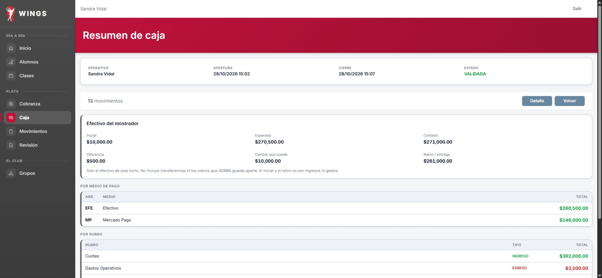
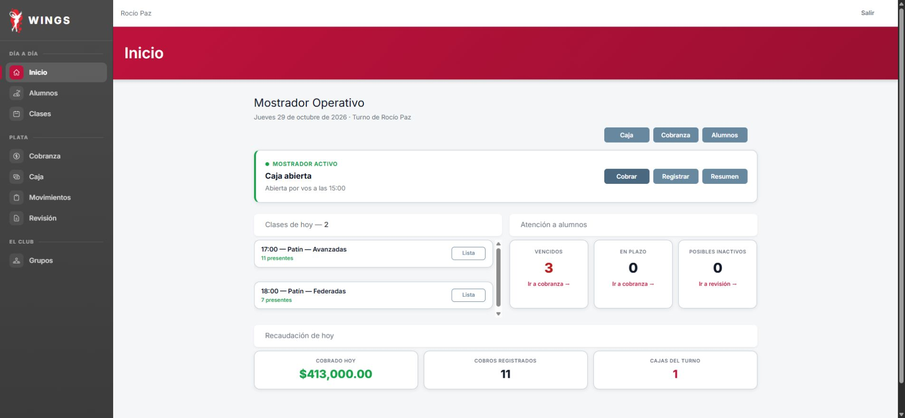

Día19 cerrado y validado; Carlos confirmó Librería. Día20 recorrido hasta20.7. Pendiente20.8–20.10: navegador local desactivado en Work. Días21–22 pendientes. No es cierre ni aceptación integral.
| Caso | Resultado | Observado y evidencia |
|---|---|---|
| 19.1 | Parcial | Se abrió caja #36 con $10.000. El intento de escribir 100000 mediante fill quedó en 10000.00 por interacción con el campo. No se obtuvo el aviso >50%, no se reabrió ni rectificó. Límite de ejecución, no rechazo de Wings demostrado. TXT · JPG |
| 19.2 | Sí | Sin motivo: validación HTML «Completa este campo». Con el motivo del guion se condonaron $14.000. Cobranza pasó de $248.000 a $234.000; 100 Al día y 0 En plazo. No se generó un movimiento de plata visible por esta acción. TXT · JPG |
| 19.3 | Parcial | Con el importe de fila $50.000, el resumen mostró $44.000. No se envió ese formulario ni se probó el diálogo Continuar/Cancelar. Se sustituyó por $44.000 y se cobró una vez en efectivo (CUOTA-133). Deuda total $190.000, 101 Al día: Joaquín dejó la lista de morosos. Diferencia frente al catálogo en la presentación del exceso; confirmación no probada. TXT · JPG |
| 19.4a | Sí | Sin rubro: Selecciona un elemento de la lista. Con monto0: El importe debe ser mayor que cero. Conserva campos; 13movimientos y esperado270500 sin cambios. TXT · TXT |
| 19.4 | Sí | Movimiento #171 de Limpieza corregido $3.800 → $3.500 como exige este caso. Pantalla «Movimiento actualizado». Los gastos de la caja bajaron $6.300 → $6.000 y el esperado $267.700 → $268.000 (el primer esperado es cuenta inferida de los renglones, no captura anterior). TXT · JPG |
| 19.5 | Parcial | Carlos confirmó manualmente; Librería172 desapareció y gastos3500/13movimientos. No se verificó por pantalla auditoría de quién/cuándo eliminó. TXT · MD |
| 19.6 | Sí | Hernán guardó la #60 con 23 ausentes, botón exacto btn-guardar-asistencias una vez. Su listado cambió Pendiente → Sin presentes. El 31/10 la lista filtrada Sin asistencia no contiene esa clase. Observación adicional: el Inicio de Sandra la rotuló «Sin lista» aun después del guardado; no se corrigió. TXT · JPG |
| 19.6b | Parcial | Esperado270500, MP146000 separado y Librería ausente. El detalle muestra fecha, concepto, medio e importe, pero no hora por movimiento. TXT · TXT |
| 19.7a | Sí | Contado271000/cambio300000 rechazado: El cambio no puede superar el efectivo contado. Caja siguió abierta. TXT |
| 19.7 | Sí | Contado271000, esperado270500, sobrante500, cambio10000. CERRADA y luego VALIDADA, ingresos caja410000; no ingreso extra por diferencia. TXT · TXT |
| 20.1 | Sí | Patines85000MP y remera18000efectivo registrados una vez; esperado178200, MP241000, ingresos413000. TXT · TXT |
| 20.2 | Sí | Sin motivo no cancela (El motivo es obligatorio); Cancha inundada cancela solo71 y permanece en hoy, Cancelada con motivo. TXT · TXT · TXT |
| 20.3 | Sí | Hernán ve clase71 Cancelada, aviso no se pueden registrar asistencias y Guardar deshabilitado. No se enviaron marcas. Ingreso recuperado mediante reinicio de un contador autorizado por Carlos. TXT · MD |
| 20.4 | Parcial | Horario14–13 rechazado en formulario conservando campos. Corregido14–15 creó una clase única31/10, grupoFútbolAvanzadas, solo Martín/Hernán ofrecidos. Verificación de visibilidad por Hernán pendiente para22.2. TXT · TXT |
| 20.5 | Sí | Mariela abrió50 del31/10 estando29/10. Aviso Esta clase todavía no ocurrió; casillas y Guardar deshabilitados. No se guardaron marcas. TXT |
| 20.6 | Sí | Celular1145123401→1145123499 en ficha y listado. Tutor conserva1145123401. Al día y pagoOct33.000/recibo4 iguales; sin nueva cuota visible. TXT · TXT · TXT |
| 20.7 | Sí | Inicio Rocío muestra Caja abierta, hora15:00, Cobrar y Registrar. TXT |
| 20.8 | No ejecutado | Pendiente desde20.8: la revisión automática del navegador primero agotó uso; al continuar, la herramienta informó navegador local desactivado en Work. El ingreso de Hernán ya se resolvió. No se ejecutó esta acción ni se sustituyó por consola. MD |
| 20.9 | No ejecutado | Pendiente desde20.8: la revisión automática del navegador primero agotó uso; al continuar, la herramienta informó navegador local desactivado en Work. El ingreso de Hernán ya se resolvió. No se ejecutó esta acción ni se sustituyó por consola. MD |
| 20.10 | No ejecutado | Pendiente desde20.8: la revisión automática del navegador primero agotó uso; al continuar, la herramienta informó navegador local desactivado en Work. El ingreso de Hernán ya se resolvió. No se ejecutó esta acción ni se sustituyó por consola. MD |
| 21.1 | No ejecutado | Todavía no reanudado. Los controles aquí enlazados son los de la primera corrida fallida, no un intento nuevo. No repetir cobros anteriores. TXT · TXT |
| 21.2 | No ejecutado | Todavía no reanudado. Los controles aquí enlazados son los de la primera corrida fallida, no un intento nuevo. No repetir cobros anteriores. TXT · TXT |
| 21.3 | No ejecutado | Todavía no reanudado. Los controles aquí enlazados son los de la primera corrida fallida, no un intento nuevo. No repetir cobros anteriores. TXT · TXT |
| 21.4 | No ejecutado | Todavía no reanudado. Los controles aquí enlazados son los de la primera corrida fallida, no un intento nuevo. No repetir cobros anteriores. TXT · TXT |
| 21.5 | No ejecutado | Todavía no reanudado. Los controles aquí enlazados son los de la primera corrida fallida, no un intento nuevo. No repetir cobros anteriores. TXT · TXT |
| 21.6 | No ejecutado | Todavía no reanudado. Los controles aquí enlazados son los de la primera corrida fallida, no un intento nuevo. No repetir cobros anteriores. TXT · TXT |
| 21.7 | No ejecutado | Todavía no reanudado. Los controles aquí enlazados son los de la primera corrida fallida, no un intento nuevo. No repetir cobros anteriores. TXT · TXT |
| 21.8 | No ejecutado | Todavía no reanudado. Los controles aquí enlazados son los de la primera corrida fallida, no un intento nuevo. No repetir cobros anteriores. TXT · TXT |
| 22.1 | No ejecutado | Todavía no reanudado. Los controles aquí enlazados son los de la primera corrida fallida, no un intento nuevo. No repetir cobros anteriores. TXT · TXT |
| 22.2 | No ejecutado | Todavía no reanudado. Los controles aquí enlazados son los de la primera corrida fallida, no un intento nuevo. No repetir cobros anteriores. TXT · TXT |
| 22.3 | No ejecutado | Todavía no reanudado. Los controles aquí enlazados son los de la primera corrida fallida, no un intento nuevo. No repetir cobros anteriores. TXT · TXT |
| 22.4 | No ejecutado | Todavía no reanudado. Los controles aquí enlazados son los de la primera corrida fallida, no un intento nuevo. No repetir cobros anteriores. TXT · TXT |
| 22.5 | No ejecutado | Todavía no reanudado. Los controles aquí enlazados son los de la primera corrida fallida, no un intento nuevo. No repetir cobros anteriores. TXT · TXT |
| 22.6 | No ejecutado | Todavía no reanudado. Los controles aquí enlazados son los de la primera corrida fallida, no un intento nuevo. No repetir cobros anteriores. TXT · TXT |
| 22.7 | No ejecutado | Todavía no reanudado. Los controles aquí enlazados son los de la primera corrida fallida, no un intento nuevo. No repetir cobros anteriores. TXT · TXT |
| 22.8 | No ejecutado | Todavía no reanudado. Los controles aquí enlazados son los de la primera corrida fallida, no un intento nuevo. No repetir cobros anteriores. TXT · TXT |
| 22.9 | No ejecutado | Todavía no reanudado. Los controles aquí enlazados son los de la primera corrida fallida, no un intento nuevo. No repetir cobros anteriores. TXT · TXT |

